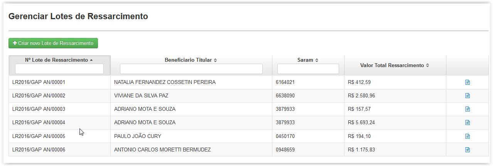
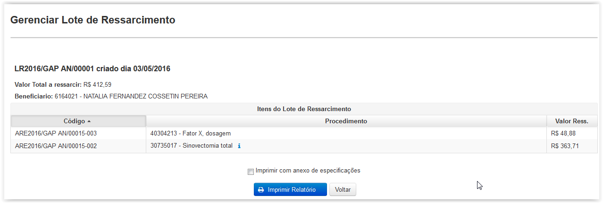
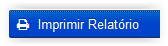
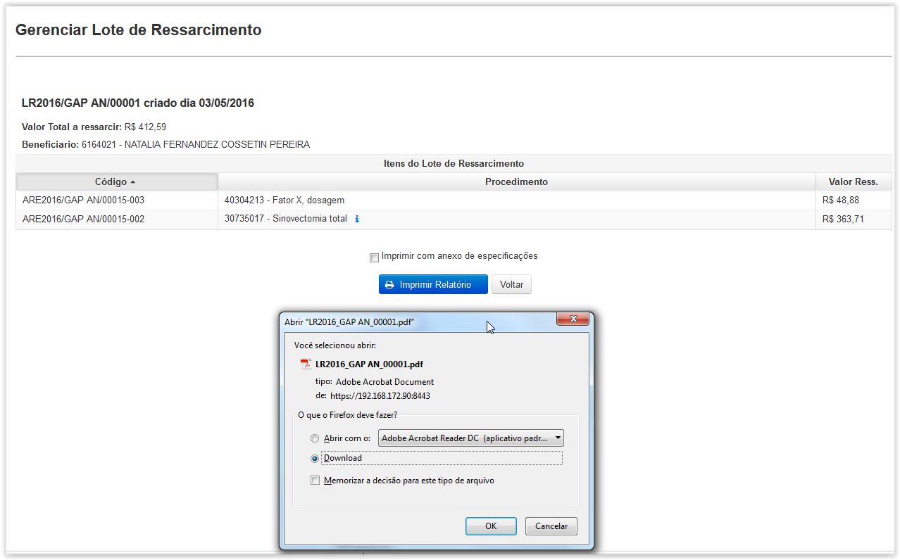
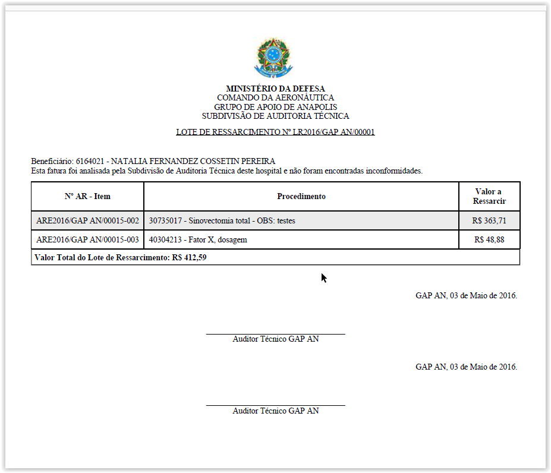
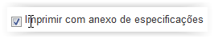
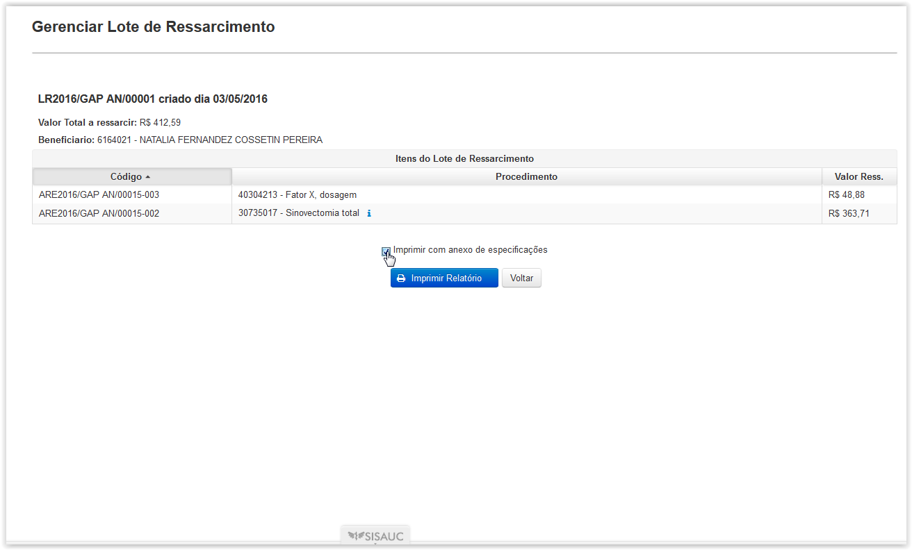
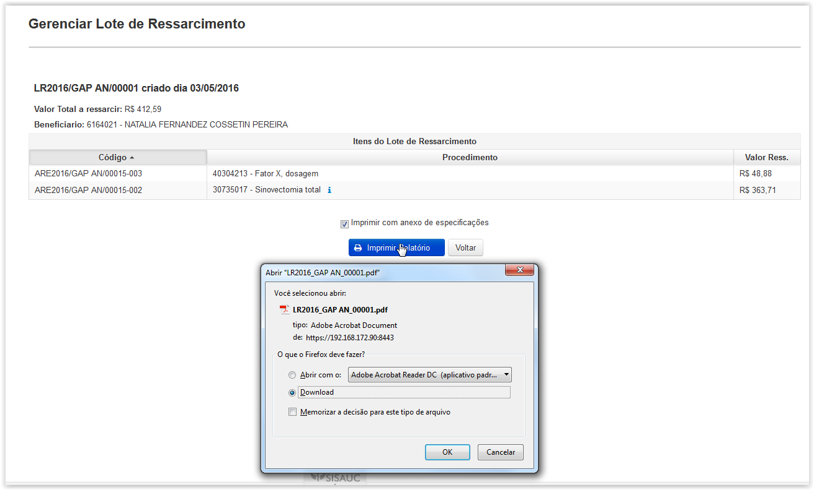
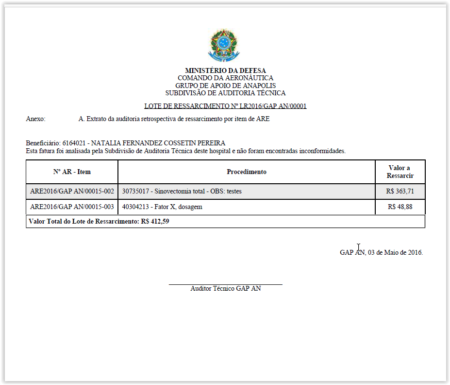
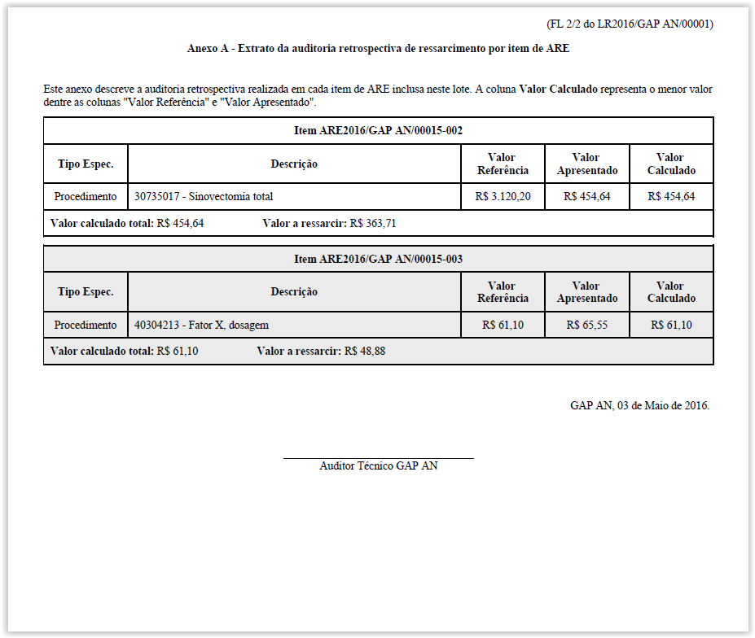

Gera uma lista de itens de ARE auditados como conforme, para posteriormente gerar um lote de pagamento para um determinado credenciado.
Ao clicar em Lotes de Ressarcimento é exibida a tela 'Gerenciar Lotes de Ressarcimento', que apresenta uma lista com os lotes já gerados.

Tela 'Gerenciar Lotes de Ressarcimento'
Para visualizar a tela de detalhes do relatório do lote deve-se clicar no botão Visualizar(), em seguida é apresentada a tela Gerenciar Lote de Ressarcimento.

Tela 'Gerenciar Lote de Ressarcimento'
Para imprimir o relatório de Lote de Ressarcimento deve-se clicar no botão Visualizar(), em seguida será mostrada uma janela popup com as opções para abrir ou salvar o arquivo:

Ao selecionar uma das opções de abrir ou salvar o arquivo gerado é exibido o Relatório de Lotes, coforme a seguir:

Para imprimir o relatório de Lote de Ressarcimento com o anexo das especificações dos procedimentos auditados deve-se marcar o campo(), clicar no botão () e, em seguida, será mostrada uma janela popup com as opções para abrir ou salvar o arquivo:


Ao selecionar uma das opções de abrir ou salvar o arquivo gerado é exibido o Relatório de Lotes com um anexo do "Extrato da Auditoria Retrospectiva de Ressarcimento por item de ARE", coforme a seguir:

